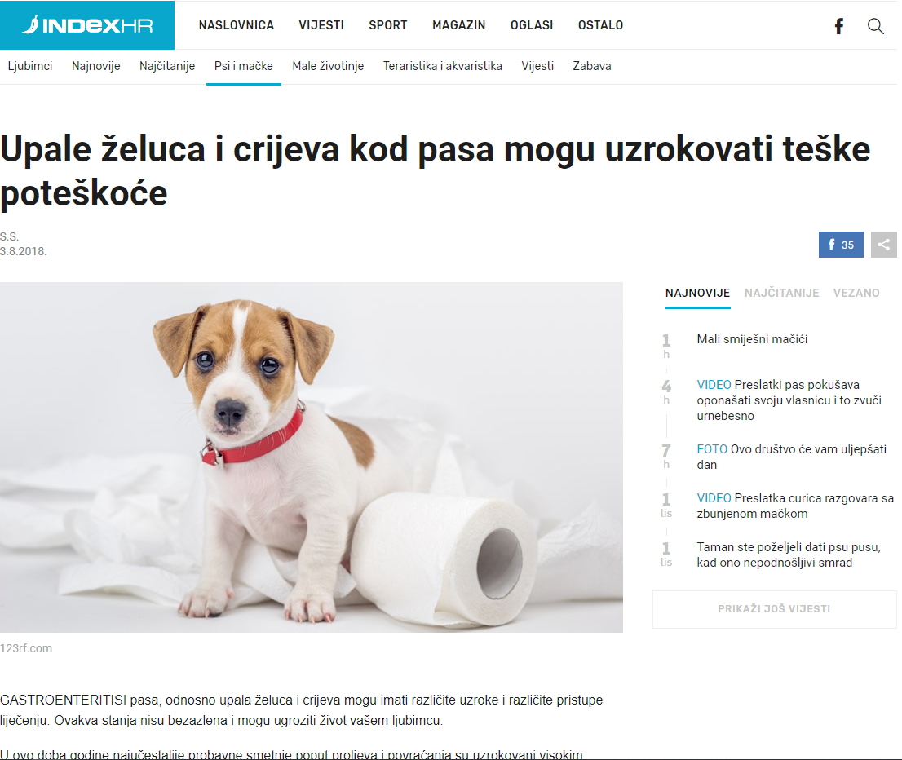

Dogs Day - dan proveden sa psom koji traži novu obitelj, a uključuje profesionalno fotografiranje u studiu, šetnju gradom (socijalizacija), druženje s drugim psima i ljudima, posjet pet shopu, te poklone (igračke, hrana, vodilica, ogrlica).

Edukacija - tribina o prevenciji zarazni bolesti 15.10.2018. Klub Mochvara, voditelj Mario Kovač, gost predavač dr. Krešimir Martinković, univ.mag.spec.med.vet s Veterinarskog sveučilišta u Zagrebu, Klinika za zarazne bolesti.
